Backup en red y software para backup
Temas de ENCO · 11/13
- 1. Formatos de Servidores - Racks y Blades
- 2. Centros de Procesamiento de Datos (CPDs)
- 3. Virtualización de Servidores
- 4. Dispositivos de Almacenamiento
- 5. Subsistemas de Disco
- 6. Fibre Channel y redes SAN
- 7. Almacenamiento IP
- 8. Sistemas de ficheros y almacenamiento en red
- 9. Virtualización del almacenamiento
- 10. Backup
- 11. Backup en red y software para backup
- 12. Archivado de la información
- 13. Hardware para backup
11.1 Utilidades básicas de backup y recuperación
Los sistemas operativos traen herramientas sencillas de backup:
| Herramienta | Para qué |
|---|---|
| dump | Copia sistemas de ficheros completos; se recuperan con restore |
| cpio | Copia cualquier número de ficheros y directorios (tar es más popular por ser más fácil de usar) |
| dd | Copia a bajo nivel: bits de un sitio a otro (p. ej. un disco entero) |
| rsync | Copias entre sistemas, conservando toda la metainformación de los ficheros |
| ditto | Clonación de discos en macOS |
| ntbackup (Windows) | Evolucionó a Backup and Restore (Windows 7 y 10) y Windows Server Backup (Windows Server 2008) |
| System Restore (Windows) | Crea puntos de recuperación del sistema (snapshots) |
11.2 Recuperación
- Un archivo: se localiza el medio (cinta o disco) donde está y se copia.
- Un sistema de ficheros: hay que recuperar todos sus archivos: normalmente, el último backup total y después los incrementales posteriores.
- Un servidor completo: hay que particionar los discos como estaban, reinstalar el SO con todas sus actualizaciones, reinstalar todo el software con parches, y finalmente recuperar los sistemas de ficheros y montar los externos.
11.2.1 Complicaciones al recuperar un servidor
- A menudo no hay registro de cómo estaban particionados los discos o configurado el RAID.
- Lleva varias horas: instalar es muchísimo más lento que copiar.
- El backup y la recuperación pueden no respetar permisos y fechas de los archivos, creando problemas difíciles de arreglar.
- Software instalado desde la red sin versión en CD, o que solo permite una instalación.
- La versión estable que se usaba puede no ser la última y ser imposible de volver a conseguir.
11.2.2 Recuperación bare-metal
La solución es una copia total que permita recuperar un servidor "en blanco", sin ningún software instalado (bare metal, "metal desnudo"). Es un procedimiento relativamente complejo y dependiente del SO. Hay que:
- Copiar la metainformación del particionado de los discos.
- Crear imágenes de las particiones que lo necesiten.
- Hacer backup normal de las particiones que no necesiten imagen.
Las imágenes deben rehacerse tras cada instalación o actualización.
La copia de particiones puede hacerse con software especializado o herramientas del SO, con el sistema en marcha o arrancando desde un CD u otro medio, de todas las particiones o solo de algunas, y a nivel de fichero (lenta pero portable) o a nivel de imagen (rápida).
Analogía
Recuperar un servidor "a mano" es reconstruir una casa ladrillo a ladrillo siguiendo los planos (si es que los tienes). Una imagen bare-metal es tener la casa prefabricada en piezas numeradas: la descargas en el solar y en unas horas está igual que antes.
11.2.3 Backup de máquinas virtuales
Es fácil: basta copiar la imagen del disco (o discos), que incluso se puede portar a otros programas de virtualización, y la configuración de la máquina se copia, porta o recrea sin dificultad. Pero cuidado con las inconsistencias entre programas y versiones, sobre todo con los snapshots: el fichero con los cambios se guarda aparte de la imagen de disco y puede no ser compatible.
11.3 Backup en red: servidores y clientes
El backup en red centraliza el procedimiento: uno o más servidores hacen el backup de los datos de los clientes, con una conexión regular cliente–servidor para salvar datos y otra esporádica para recuperar los perdidos.
11.3.1 El servidor de backup
Tiene cuatro componentes:
- Planificador de trabajos: qué datos salvar y cuándo.
- Gestor de errores: detecta, analiza e informa de errores en los backups.
- Gestión de metainformación: guarda, de cada fichero, su ubicación original y en el backup, fecha de modificación y de backup, etc.
- Gestor de medios: gestiona el medio de backup.
El gestor de medios elige y usa las cintas adecuadas, mantiene información de control (para no usar una cinta equivocada), retira y reutiliza las cintas obsoletas, planifica las grabaciones y compacta la información.
Puede ser el eslabón débil: maneja muchísimos datos, depende de la LAN y de los clientes, y las cintas son un medio problemático porque necesitan recibir los datos a una velocidad determinada (si no llegan rápido, la cinta para y rebobina). Por eso cada vez es más común hacer primero una copia en disco y luego pasarla a cinta.
11.3.2 Los clientes de backup
Cada ordenador ejecuta un cliente (agente) específico de su plataforma, que negocia con el servidor el backup y la recuperación y puede ofrecer funciones avanzadas como almacenamiento jerárquico. El backup puede hacerse a nivel de fichero (lo habitual), de bloque o de volumen, y hay clientes específicos para aplicaciones (MS Exchange, HCL Domino) que hacen el backup más eficiente.
11.4 Software de backup de código abierto
11.4.1 AMANDA
AMANDA (Advanced Maryland Automated Network Disk Archiver) tiene un servidor (Linux) con disco y cinta y clientes en casi cualquier plataforma (macOS, Linux, Solaris, Windows).
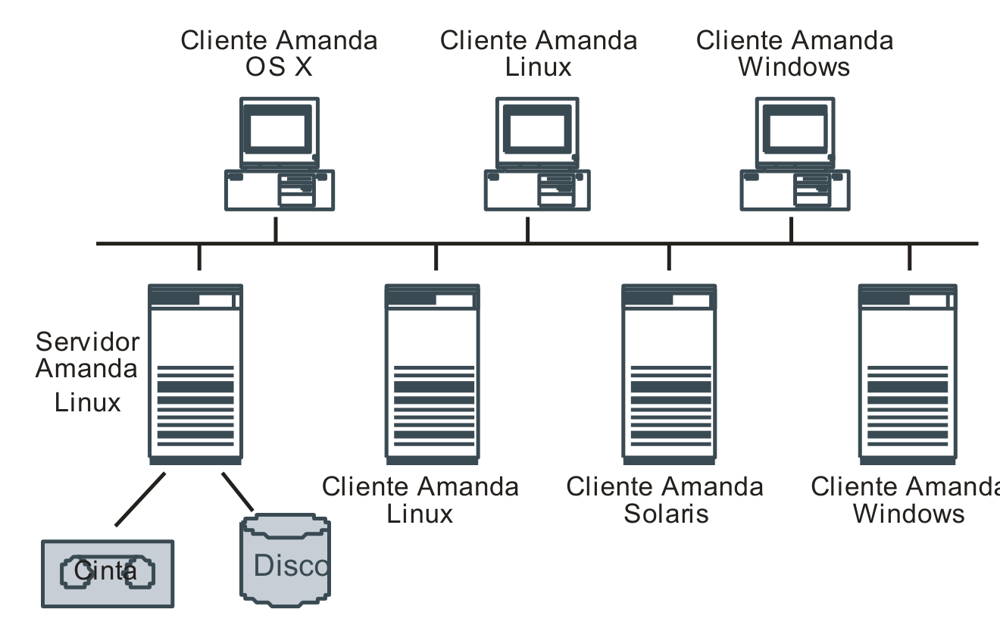
Características:
- Usa herramientas y formatos estándar: dump y tar.
- Usa un holding disk (disco intermedio) para guardar los archivos antes de grabarlos en cinta.
- Backups totales e incrementales.
- Planificación automática: el administrador da reglas generales (qué servidores se incluyen y la política de totales e incrementales) y AMANDA calcula la mejor estrategia repartiendo la carga. Por ejemplo, si dos servidores A y B necesitan un total y un incremental en días alternos, un día hace total de A e incremental de B y al siguiente incremental de A y total de B.
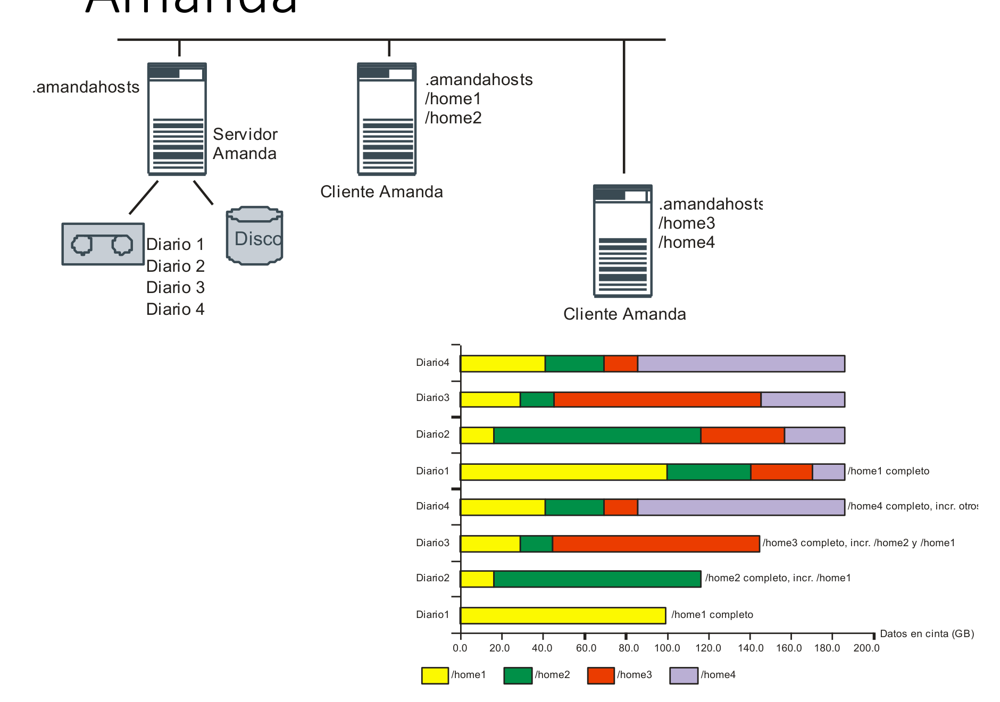
Con 4 directorios, AMANDA no hace todos los completos el mismo día: Diario1 completo de /home1, Diario2 completo de /home2 + incremental de /home1, etc. Así el volumen en cinta de cada día queda equilibrado.Más detalles: gestiona cintas y bibliotecas con herramientas estándar del SO; el cliente ejecuta un agente; se comunica por TCP, UDP y OpenSSH; permite cifrar; en vez de agentes se pueden montar en el servidor los directorios de los clientes (NFS o Samba); y la recuperación requiere privilegios de root en el cliente.
Ventajas: backup sencillo de todos los equipos de una red en casi cualquier plataforma, producto probado y bien documentado, backup en disco y cinta, sin formatos ni drivers propietarios (se puede leer cualquier backup desde cualquier dispositivo), cifrado en cliente o servidor y planificación automática optimizada.
11.4.2 Bacula
Bacula tiene varios componentes que se comunican por TCP:
- Director: gestiona los componentes y la configuración.
- Servidor de base de datos: guarda la lista de ficheros salvados y su origen (el catálogo).
- Demonio de almacenamiento: interactúa con las cintas o discos.
- Consola administrativa.
- Demonio de ficheros: el cliente, que envía los datos al demonio de almacenamiento.
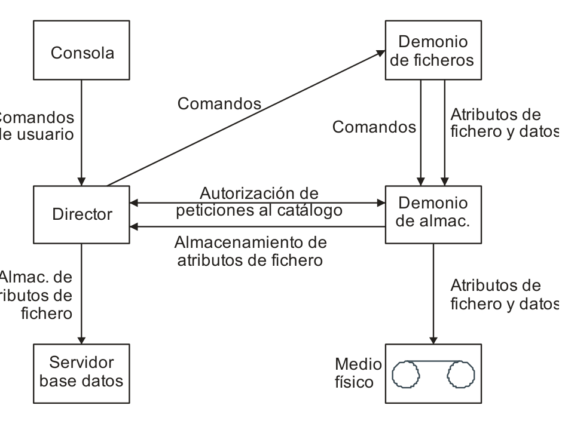
Características: base de datos SQL; un backup puede ocupar varios volúmenes; trabaja con muchos soportes; backups completos, diferenciales e incrementales; formato propio de almacenamiento; muy escalable (reparte datos en varios discos); buen backup en Windows incluso con archivos abiertos gracias a VSS (Volume Shadow Copy Service); recuperación bare-metal y cifrado de datos y tráfico con TLS.
| AMANDA | Bacula | |
|---|---|---|
| Instalación | Más sencilla (menos componentes) | Más compleja |
| Formato | Estándar (dump, tar) | Propietario |
| Catálogo | — | Base de datos SQL |
| Cintas | — | Varios backups por cinta y un backup en varias cintas |
| En común | Multiplataforma, cintas o discos, reparten los backups a lo largo de varios días |
11.4.3 BackupPC
Pensado para oficinas donde los equipos no están siempre conectados (portátiles que entran y salen de la LAN). Si un cliente no responde, insiste y genera notificaciones sin dar fallo de backup, y sabe identificar clientes con DHCP que no tienen IP fija.
Para entenderlo mejor
AMANDA, Bacula y BackupPC — webs oficiales de los tres programas (artículos, inglés).
11.4.4 ¿Por qué software comercial?
Se recurre a él cuando el open source falla en algo: plataforma no soportada; no admite particiones sin formatear (algunas BD usan bloques directamente); límite de clientes simultáneos; datos que necesitan trato especial; falta de gestión avanzada (archivado, almacenamiento jerárquico); no reduce tráfico (compresión en cliente, límite de ancho de banda por cliente); falta algún formato de backup; se necesita administración más fácil, alta seguridad o recuperación más fácil; o el producto no es suficientemente robusto o su automatización es insuficiente.
11.5 Arquitecturas de backup en red
El backup en red usa la LAN para mover los datos. Problemas:
- Organización: decenas, cientos o miles de servidores, PC y portátiles en condiciones distintas.
- Rendimiento: el almacenamiento se duplica cada pocos meses, ya no existe el backup nocturno y los patrones de uso cambian: se hace backup cuando se puede, no cuando se quiere.
11.5.1 Cuellos de botella sin red de almacenamiento
Sin SAN, hay sobrecarga en la gestión de la metainformación, en los buses del servidor de backup (durante el backup o al compactar cintas) y en los buses de los clientes. La causa es que los datos entran en cada ordenador por un bus hasta la memoria, los procesa la CPU y vuelven a salir por otro bus. Los TOE alivian algo la tarjeta de red, pero no son la solución.
11.5.2 Mejoras sin red de almacenamiento
En un entorno centrado en servidores (sin SAN) hay tres opciones. En los diagramas, (1) es el backup de los PC de usuario por la LAN y (2) el de los servidores:
- LAN dedicada al backup: una segunda LAN solo para el tráfico de backup, para no saturar la de usuarios.
- Varios servidores de backup: se reparte la carga entre ellos.
- Servidor de backup en el propio servidor de aplicaciones: el servidor de ficheros hace su propio backup a sus cintas, sin enviar sus datos por la red.
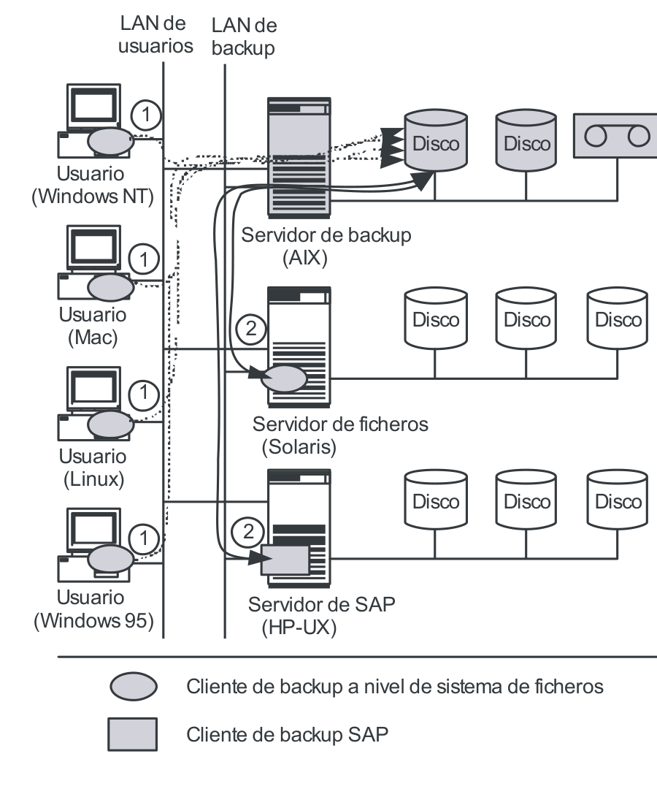
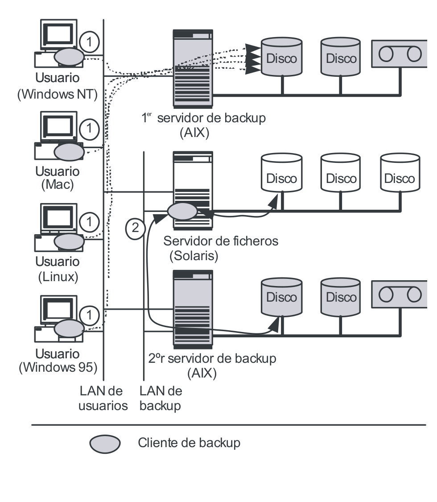
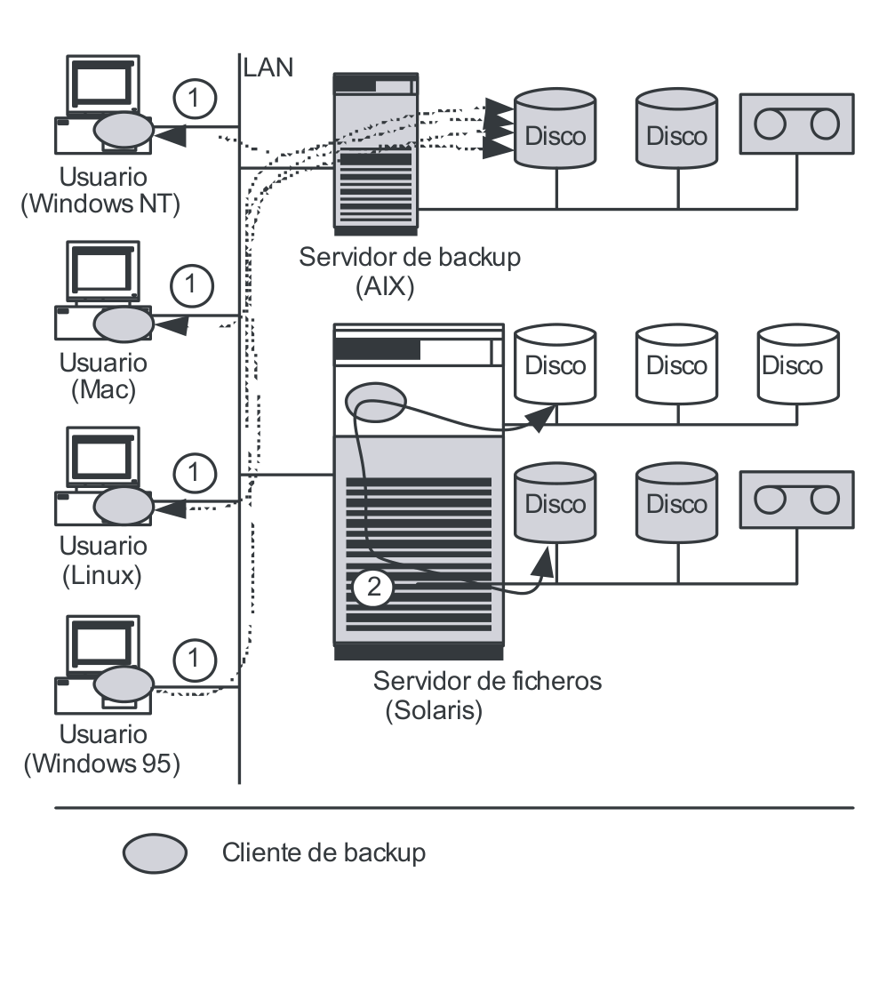
11.5.3 Backup con red de almacenamiento
Con una SAN aparecen opciones nuevas. En todos los diagramas, la línea fina (1–2) es la coordinación por la LAN y la gruesa (3) el camino de los datos:
- Sin servidor (server-free): el servidor de backup coordina, pero los datos van directamente del disco a la cinta por la SAN, sin pasar por ningún servidor.
- Sin LAN (LAN-free): los datos van del disco al servidor de ficheros y de ahí por la SAN a la cinta; no tocan la LAN.
- Sin LAN con sistema de ficheros compartido: el servidor de backup lee directamente el disco del servidor de ficheros (gracias al sistema de ficheros compartido) y lo lleva a la cinta, descargando al servidor de ficheros.
- Con copias instantáneas: el subsistema de discos hace una copia instantánea (1) y un segundo servidor hace el backup desde la copia (2), mientras el original sigue dando servicio.
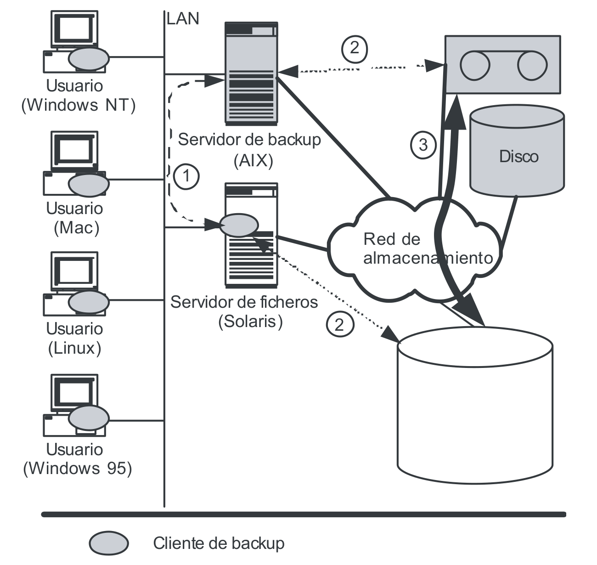
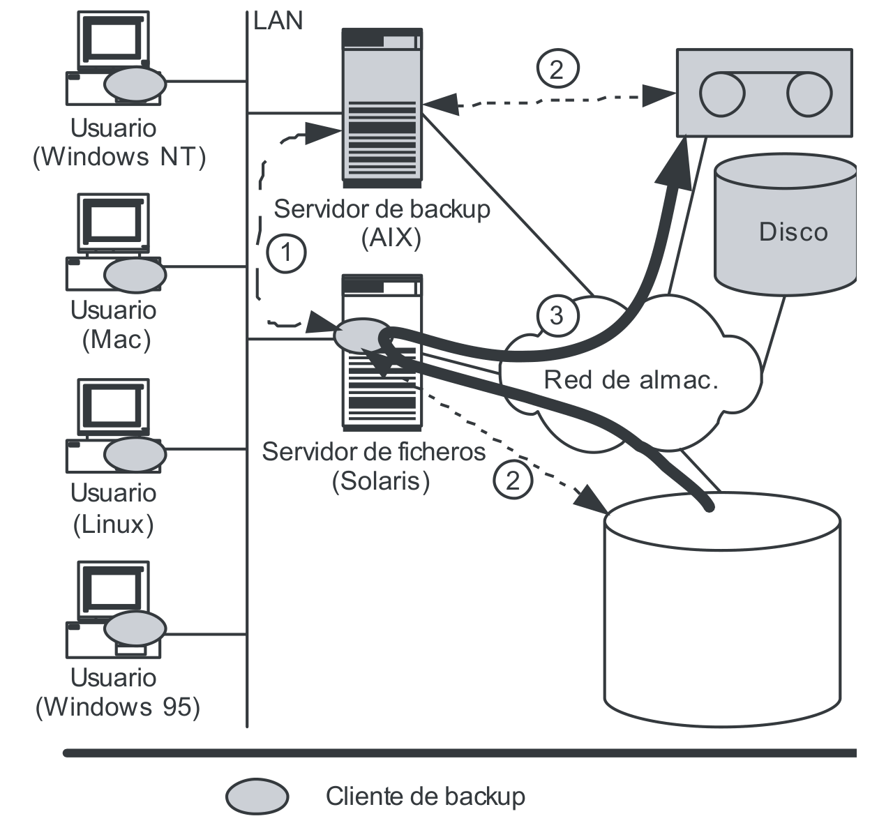
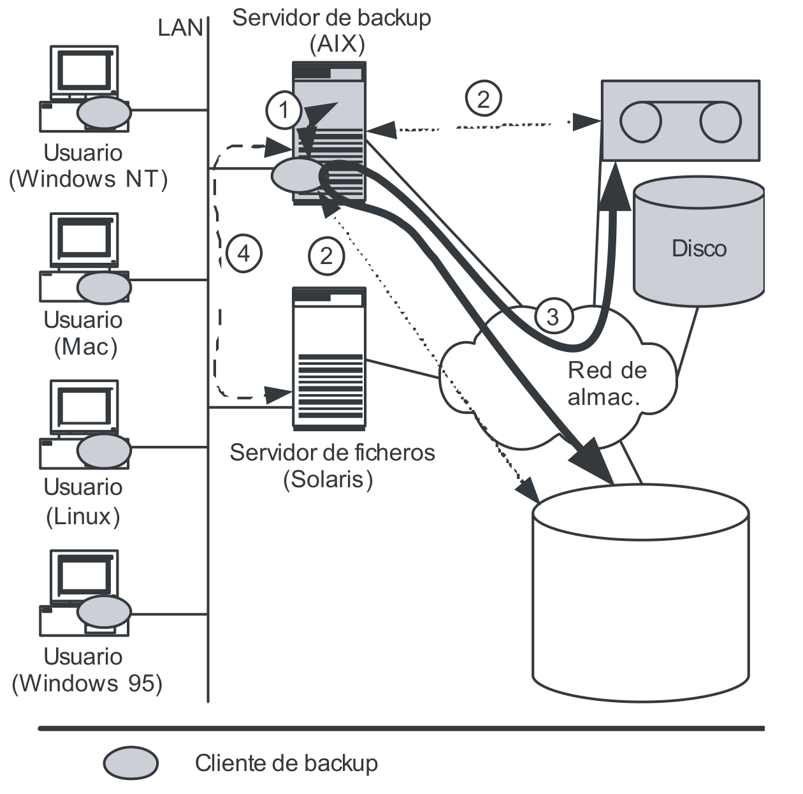
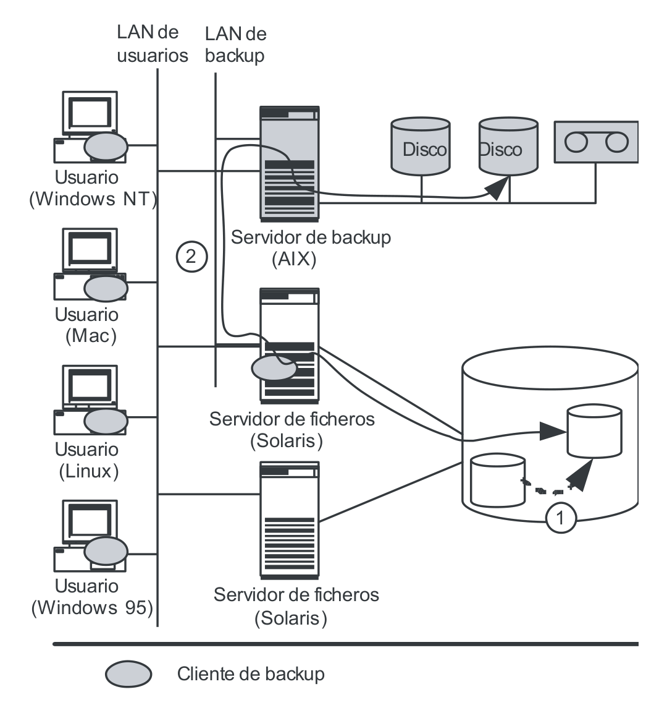
Analogía
Es una mudanza: sin SAN, todas las cajas pasan por el salón (la LAN) y por las manos de cada inquilino (los buses y CPU de los servidores). Con SAN, el camión entra por el garaje (la red de almacenamiento) y, en el caso server-free, los operarios llevan las cajas del trastero al camión sin que nadie de la casa tenga que tocarlas.
11.6 Mirroring remoto y disaster recovery
Backup frente a mirroring remoto: el backup incremental es más útil que una simple copia porque conserva varias versiones de los archivos durante un tiempo; un espejo replica también las modificaciones erróneas (si borras algo por error, se borra en ambos lados).
Lo ideal es combinarlos:
- CPD_1 envía todas las modificaciones a CPD_2.
- CPD_2 retiene los cambios unas horas; durante ese tiempo, CPD_1 puede anular una modificación.
- Pasado ese tiempo, CPD_2 consolida los cambios y está siempre listo para sustituir a CPD_1 ante un desastre.
- Los backups se hacen en CPD_2, así que CPD_1 no carga su red ni sus servidores con backups.
11.7 Backup de sistemas de ficheros y NAS
- Servidores de ficheros: el backup debe incluir los archivos, su metainformación (nombre, etc.) y la metainformación del servidor (grupos, tamaño del sistema, configuración…).
- Sistema de ficheros: operación sencilla; se puede usar el bit de archivo.
- Servidores NAS: son sistemas cerrados con su propio cliente de backup. No es práctico sacar los datos del NAS para hacer backup, por la carga en la red y porque no es posible (o sencillo) copiar la metainformación del NAS. La solución es un backup externo con el cliente propio del NAS, que envía los datos por una LAN de backup o una red de almacenamiento hasta las cintas.
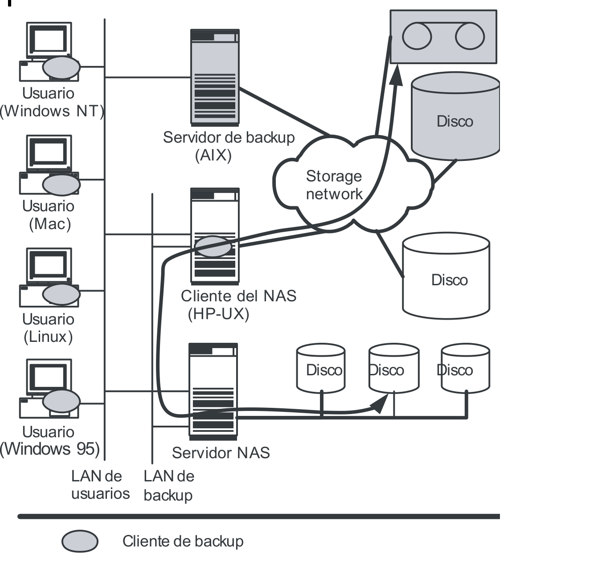
11.8 Backup de bases de datos
Una base de datos cambia constantemente, así que hay que elegir cómo copiarla:
| Modo | Cómo funciona |
|---|---|
| En frío | Se cierra la BD antes del backup |
| En caliente | Las transacciones pendientes no se aplican, se anotan en un log; tras el backup, la BD se actualiza con lo que hay en el log |
| Borroso (fuzzy) | Se siguen aplicando cambios durante el backup, registrándolos en logs; la copia tendrá datos inconsistentes, que se eliminan examinando los logs |
Las dos primeras son preferibles por su simplicidad.
Otra opción son las copias instantáneas: se entra en modo backup en caliente (creando logs), se hace una copia instantánea y la BD vuelve enseguida al estado normal aplicando los logs; el backup se hace después sobre la copia instantánea. Conviene que sea incremental y, en BD que acceden al disco por bloques, a nivel de bloque.
11.x Ideas clave
- Utilidades: dump/restore, cpio/tar, dd (bajo nivel), rsync (entre sistemas, con metainformación), ditto; en Windows ntbackup → Backup and Restore, System Restore.
- Recuperar un servidor a mano es lento y frágil (particiones, RAID, software irrecuperable) → bare-metal: metainformación de particiones + imágenes; fichero (lento, portable) vs imagen (rápido). VMs: copiar imagen, ojo con snapshots.
- Servidor de backup: planificador, gestor de errores, metainformación y gestor de medios (eslabón débil; cintas exigen velocidad constante → disco intermedio). Clientes por plataforma, a nivel de fichero, bloque o volumen.
- AMANDA: dump/tar, holding disk, planificación automática equilibrada, sin formatos propietarios. Bacula: director, BD SQL, demonios de almacenamiento y ficheros, consola; formato propio, VSS, bare-metal, TLS. BackupPC: portátiles y DHCP.
- Sin SAN: cuellos de botella en buses y CPU; mejoras con LAN de backup, varios servidores o backup en el propio servidor. Con SAN: server-free, LAN-free, LAN-free con FS compartido, copias instantáneas.
- Mirroring remoto + backup: CPD_2 retiene cambios unas horas, consolida y hace los backups.
- NAS: backup con su propio cliente. BD: frío, caliente (log), fuzzy; o copias instantáneas en modo caliente.